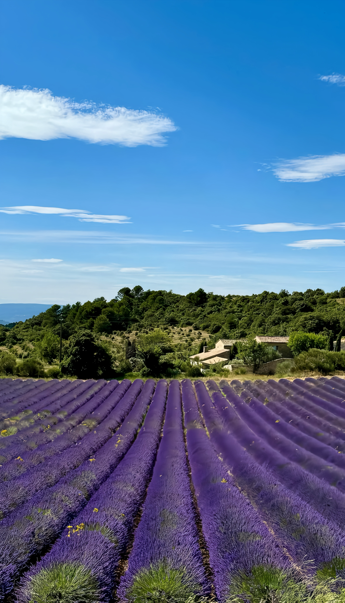

Marseille is France's second city, but it couldn't be more different from Paris. This is a gritty, loud, multicultural port where the Mediterranean culture feels more North African than classically French. The Vieux-Port (Old Port) is the beating heart, with fishing boats bobbing in the harbor and locals arguing over pastis at dockside cafes. It's not polished or precious—it's real, messy, and unapologetically itself.
Yes, there's graffiti. Yes, some neighborhoods are rough around the edges. But that's the point. Marseille doesn't perform for tourists the way Paris does. You'll find incredible bouillabaisse, stunning calanques (fjord-like inlets), North African markets, and some of the best street art in Europe. If you want Instagram-perfect Provence, go to Aix. If you want to experience a real working Mediterranean city with 2,600 years of history, Marseille delivers.
Gallery




Where to Stay
Le Panier neighborhood puts you in Marseille's oldest quarter, with narrow streets, colorful shutters, and a village-within-a-city feel. It's charming but hilly, and some corners get sketchy after dark. Stay on the main streets and you'll be fine.
Near the Vieux-Port gives you easy access to ferries, restaurants, and the energy of the waterfront. More touristy but incredibly convenient. Morning fish markets and evening aperitivo culture happen right outside your door.
Budget tip: Marseille has decent hostels and Airbnbs. Unlike Paris, you don't need to spend a fortune for a good location. Just read reviews carefully—quality varies widely.
Where to Eat
For bouillabaisse: This is THE dish of Marseille—a traditional fish stew that should be a religious experience when done right. Chez Fonfon and Le Miramar are the classic choices. Expensive, yes, but this is not the place to cheap out. Order it with rouille (saffron garlic mayonnaise) and watch the servers bring out the soup tureen with ceremonial flair.
For North African food: Marseille has one of the largest North African populations in France. Head to Noailles market area for couscous, tagine, and merguez that rival anything in Morocco. Cheap, delicious, and authentically Marseille.
For street food: Panisse (chickpea fritters) and chichi frégi (fried dough) from vendors near the port. Local fast food that costs a few euros and tastes incredible after too much pastis.
What to Do
Explore Le Panier. Marseille's oldest neighborhood is a maze of steep streets, colorful buildings, and street art. It's gentrified now with boutiques and cafes, but still retains character. The Vieille Charité building houses museums, but just wandering the alleys is the real attraction.
Visit the Vieux-Port. The Old Port is the heart of Marseille. Morning fish market, ferry boats to the islands, restaurants with harborside terraces. Fort Saint-Jean and Fort Saint-Nicolas guard the entrance. It's touristy but essential—this is where Marseille's 2,600-year history began.
Notre-Dame de la Garde. The hilltop basilica with the giant golden Madonna is visible from everywhere in the city. Climb up (or take a tourist train) for panoramic views over Marseille, the port, and the Mediterranean. The interior is over-the-top gilt and marble—classic Southern French Catholicism.
MuCEM museum. The Museum of European and Mediterranean Civilizations is architecturally stunning—a modern cube connected to the old fort by a dramatic footbridge. Exhibitions focus on Mediterranean culture and history. Worth visiting for the building alone, even if museums aren't your thing.
Calanques National Park. These dramatic limestone cliffs and turquoise inlets are Marseille's biggest natural attraction. Take a boat tour from the Vieux-Port, or hike from Cassis (tough but spectacular). Calanque de Sormiou is closest to the city, Calanque d'En-Vau is the most beautiful. Bring water and sun protection—it's exposed and hot.
Street art. Marseille has embraced graffiti culture more than any other French city. Le Panier and Cours Julien are covered in murals. It's vibrant, political, and constantly changing. Bring a camera.
Sample Itinerary
Day 1: Morning fish market at Vieux-Port, wander through Le Panier, lunch at a North African cafe in Noailles, afternoon at MuCEM, sunset from Notre-Dame de la Garde.
Day 2: Boat trip to Calanques National Park, swim in turquoise water, picnic on the rocks, return for late afternoon aperitivo at the port, bouillabaisse for dinner.
Day 3: Day trip to Cassis or Aix-en-Provence (both 30-45 minutes away), or explore Cours Julien street art and Longchamp Palace if staying in the city.
Tips
Safety: Marseille has a reputation for being dangerous. It's not. Like any big port city, certain neighborhoods are rough (northern districts especially), but tourist areas are fine. Use normal city awareness—don't flash expensive gear, avoid empty streets late at night, keep bags zipped. The Vieux-Port, Le Panier, and Calanques are perfectly safe.
Getting around: Metro is efficient and cheap. Walking works for the center, but Marseille is hillier than it looks. Taxis and Uber exist but can be hard to find during rush hour.
When to visit: May-June and September are ideal—warm enough for swimming, not brutally hot. July-August is peak season with crowds and heat. Winter is mild but many beach restaurants close.
Language: English is less common here than in Paris. Learn basic French or download a translation app. Locals appreciate the effort, and the city feels more welcoming when you try.
Day trips: Cassis (30 min), Aix-en-Provence (45 min), and Arles (1 hour) are all easy to reach by train or bus. Marseille makes an excellent base for exploring Provence.